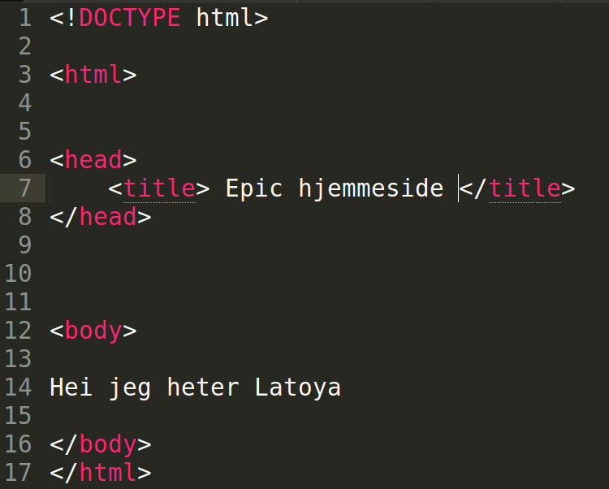
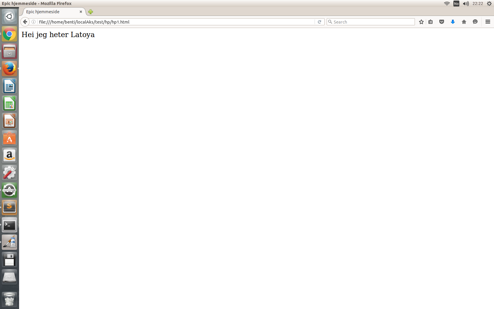

- Start med å lage en my mappe i Dokumenter-mappen; kall den nye mappen noe enkelt...
- Åpne notisblokk og skriv inn dette..  < > (krokodille-klemmene) finner du mellom Shift og z på tastaturet / (forover-slash) finner du over 7-tallet på tastaturet
- Lagre dette dokumentet som hjemmeside_navnetditt.html i mappen du laget
- Dobbeltklikk på dette dokumentet i mappen...og vips! du har en hjemmeside.. Den ser sånn ut... Fin, ikke sant!! :D 